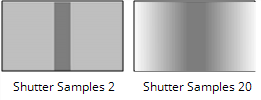
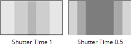

|
连接类型 |
连接名称 |
函数 |
|
输入 |
FgVecs BgVecs
|
如果之前已经估计过输入序列中的运动 (例如，使用 VectorGenerator)，您可以向 Kronos 提供一个或多个向量序列，以节省处理时间。 注意: 的 BgVecs 输入显示为节点一侧的箭头。 |
|
MoSrc |
一个备用运动源输入，例如，如果你的 源 序列非常嘈杂，干扰运动估计。 |
|
|
哑光 |
前景的可选遮罩，可通过减少前景和背景对象之间可能发生的像素拖动来改善运动估计。 |
|
|
源 |
要重新计时的序列。 |
|
控制 (UI) |
旋钮 (脚本) |
默认值 |
函数 |
|
Kronos 标签 |
|||
|
本地 GPU |
GpuName |
N/A |
显示用于渲染的 GPU 使用 GPU (如果可用) 已启用。本地 GPU 显示 不可用 当: • 使用 CPU 被选为 默认闪烁设备 在 偏好 . • 在您的系统上找不到合适的 GPU。 • 无法在选定的 GPU 上创建处理上下文，例如当 GPU 上没有足够的可用内存时。 如果可用，您可以通过导航到 偏好 并从中选择一个替代方案 默认闪烁设备 下拉列表。 注意: 选择不同的 GPU 需要重新启动 Nuke 在变更生效之前。 |
|
使用 GPU (如果可用) |
UseGPUIfAvailable |
已启用 |
启用时，渲染发生在 本地 GPU 指定 (如果可用)，而不是 CPU。GPU 和 CPU 之间的输出在 NVIDIA GPU 上是相同的，但是使用 GPU 可以显著提高处理性能。 Nuke 在 2013年底的 Mac Pro 6,1 和 2015年中的 Mac Pro 11,5 上支持 AMD gpu，运行 OS X 10.9.3 “mavericks” 或更高版本。虽然，在某些情况下，GPU 和 CPU 之间的比特级相等保持不变，但对于某些操作，这种配置可能存在精度限制。
注意:
在没有本地 GPU 的情况下启用此选项允许脚本在 GPU 上运行，只要脚本在具有 GPU 可用的机器上打开。
GPU 处理还需要某些 NVIDIA GPU 和 CUDA 驱动程序，或者在 2013年底运行 10.9.3 “mavericks” 或更高版本的 Mac Pro 6,1 和 2015年中 Mac Pro 11,5 的情况下，某些 AMD GPU 和驱动程序。有关最低要求的更多信息，请参考 帮助 > 发行说明 . |
|
输入范围 |
输入。首先 |
N/A |
要使用的第一帧输入。 首次创建节点时，将自动将其设置为 源 剪辑。之后，只有当您单击时才会更新 重置 . |
|
输入。最后 |
N/A |
要使用的最后一帧输入。 当您第一次创建节点时，它会自动设置为 源 剪辑。之后，只有当您单击时才会更新 重置 . |
|
|
重置 |
ResetInputRange |
N/A |
重置 输入范围 到当前的帧范围 源 输入。这可能是最好的, 源 输入已更改。 |
|
渠道 |
退休频道 |
所有 |
设置受重定时影响的通道。 |
|
方法 |
插值 |
运动 |
设置要使用的插值算法: • 框架 -显示最近的原始帧。 • 混合 -两个帧之间的混合用于中间帧。这可以快速渲染，并且在将方法设置为运动之前调整曲线上的计时时非常有用。 • 运动 矢量插值用于计算中间帧。 |
|
计时 |
Timing2 |
输出速度 |
设置如何控制剪辑的新计时: • 输出 / 输入速度 -根据总输出持续时间描述重新计时。例如，双速使剪辑的持续时间减半，而双速使剪辑的持续时间减半。 • 框架 -用相对术语描述重新计时，例如，“在输出剪辑的 100 帧，显示源剪辑的 50 帧”。您需要为此设置至少 2 个关键帧才能重新计时剪辑。 |
|
输出速度 |
TimingOutputSpeed |
0.5 |
此控件仅在 计时 设置为 输出速度 . 低于 1 的值会减慢剪辑速度，反之亦然。例如，若要将剪辑减速 2 倍 (半速)，请将此值设置为 0.5。 注意: 使用 Retimes 很难控制 输出速度 ,因为您正在重新计时输出帧。改变关键帧会改变所有后期帧的相对位置。然而, 输出速度 关键帧允许您使用负速度值，与 输入速度 Retimes。 |
|
输入速度 |
TimingInputSpeed |
0.5 |
此控件仅在 计时 设置为 输入速度 . 低于 1 的值会减慢剪辑速度，反之亦然。例如，若要将剪辑减速 2 倍 (半速)，请将此值设置为 0.5。 注意: 使用 Retimes 可以更容易控制 输入速度 ,因为关键帧是针对源帧而不是输出帧设置的。然而, 输入速度 关键帧不允许您使用负速度值，与 输出速度 Retimes。 |
|
框架 |
TimingFrame2 |
1 |
此控件仅在 计时 设置为 框架 . 使用此选项指定时间轴中当前帧处的源帧。例如，要将 50 帧剪辑减慢一半，请将 框架 到 1 在帧 1 和 框架 在 100 帧到 50。 |
|
运动 |
运动估计 |
依赖于脚本 |
设置计算运动估计向量的方法: • 本地 -使用局部块匹配来估计运动矢量。此方法处理速度更快，但会导致输出中出现瑕疵。此选项用于传统兼容性。 • 正规化 -使用半全局运动估计在区域之间产生更一致的向量。 注意: 从早期版本的 Nuke 默认加载的脚本 本地 向后兼容的运动估计。将新的 Kronos 节点添加到节点图默认为 方法 到 正规化 运动估计。 |
|
矢量细节 |
VectorDetail |
0.3 |
调整此选项以改变向量场的密度。值 1 在每个像素处生成向量，而值 0.5 在每个其他像素处生成向量。 更高的值会获得更精细的运动，但也会增加处理时间。 |
|
强度 |
强度 |
1.5 |
此控件仅在 方法 设置为 正规化 . 设置帧之间匹配像素的强度。更高的值允许您准确地将一幅图像中的相似像素与另一幅图像进行匹配，即使生成的运动场参差不齐，您也可以集中精力进行细节匹配。较低的值可能会错过本地细节，但不太可能为您提供奇怪的伪向量，从而产生更平滑的结果。 注意: 默认值应该对大多数序列都很有效。 |
|
平滑度 |
平滑度 |
0.5 |
此控件仅在 方法 设置为 本地 . 高平滑度可能会错过许多局部细节，但不太可能为您提供奇怪的杂散向量，而低平滑度集中在细节匹配上，即使结果场是锯齿状的。 注意: 默认值应该对大多数序列都很有效。 |
|
重采样 |
ResampleType |
双线性 |
设置重新计时时应用的重新采样类型: • 双线性 -默认过滤器。处理速度更快，但在更高的缩放级别下会产生较差的结果。你可以使用 双线性 在使用其他重采样类型之一生成输出之前预览重定时。 • Lanczos4 和 Lanczos6 -这些过滤器有利于缩小规模，并提供一些图像锐化，但需要更长的时间来处理。 |
|
快门 |
|||
|
快门样本 |
ShutterSamples |
1 |
设置在快门时间内用于创建输出图像的中间图像数。增加此值以获得更平滑的运动模糊，但请注意，渲染需要更长的时间。  |
|
快门时间 |
ShutterTime |
0 |
设置重新计时序列的等效快门时间。例如，0.5 的快门时间相当于 180 度机械快门，因此在每秒 24 帧时，曝光时间将是每秒的 1/48。 想象一个灰色矩形在屏幕上从左到右水平移动。下面的数字显示了 快门时间 影响重新计时的矩形。  |
|
自动快门时间 |
AutoShutterTime |
残疾人 |
启用后，Kronos 会自动计算整个序列的快门时间。 请注意，这只会在重新计时的速度大于原始速度时产生运动模糊。 |
|
输出 |
输出 |
结果 |
设置重新计时图像的最终输出显示。选择除 结果 只有当一个 哑光通道 被使用。 • 结果 -显示重新计时 源 图像。 • 哑光 -显示重新计时 哑光 输入。 • 前景 -显示重新计时的前景。遮罩输入之外的背景区域可能显示垃圾。 • 背景 -显示重新计时的背景。哑光输入中的前景区域可能显示垃圾。 |
|
哑光通道 |
MatteChannel |
没有 |
在哪里获取用于运动估计的 (可选) 前景蒙版: • 没有 -不要使用哑光。 • 源 Alpha -使用的阿尔法 源 输入。 • 源倒阿尔法 -使用的倒阿尔法 源 输入。 • 哑光亮度 -使用的亮度 哑光 输入。 • 哑光倒置亮度 -使用倒置的亮度 哑光 输入。 • 哑光阿尔法 -使用的阿尔法 哑光 输入。 • 哑光倒置阿尔法 -使用的倒阿尔法 哑光 输入。 |
|
高级 |
|||
|
闪烁补偿 |
闪烁补偿 |
残疾人 |
启用时，Kronos 会考虑亮度和整体闪烁的变化，这可能会导致输出出现问题。 可变亮度的例子包括金属表面的高光，如车身，或层内以不可预测的方式反射光线的水体。 注意: 使用 闪烁补偿 增加渲染时间。 |
|
传统模式 |
LegacymodeNuke9 |
依赖于 Nuke 版本 |
从早期版本的 Nuke 默认加载的脚本 传统模式 为了向后兼容。向节点图添加新的 Kronos 节点将隐藏此控件。 启用后，Kronos 将恢复为传统的计算方法 输出速度 使用 本地 运动估计方法。 |
|
高级> 公差 |
|||
|
重量红色 |
WeightRed |
0.3 |
为了提高效率，大部分运动估计只在亮度上进行 -- 也就是说，使用单色图像。公差允许您在计算图像亮度时调整每个颜色通道的权重。这些参数很少需要调整。然而，例如，您可能希望增加红色权重 重量红色 为了让算法集中精力让主要是红色物体的运动正确，代价是拍摄中的其余项目。 |
|
重量绿色 |
WeightGreen |
0.6 |
|
|
重量蓝色 |
WeightBlue |
0.1 |
|
|
向量间距 |
矢量间距 |
20 |
设置查看器上显示的运动矢量之间的间距 覆盖向量 已启用。默认值 20 表示绘制每 20 个向量。 |
|
覆盖向量 |
展示向量 |
残疾人 |
启用后，运动矢量将显示在查看器中。向前运动矢量以红色绘制，向后运动矢量以蓝色绘制。 注意: 如果在渲染之前不关闭覆盖，查看器中显示的运动矢量将添加到输出中。 |